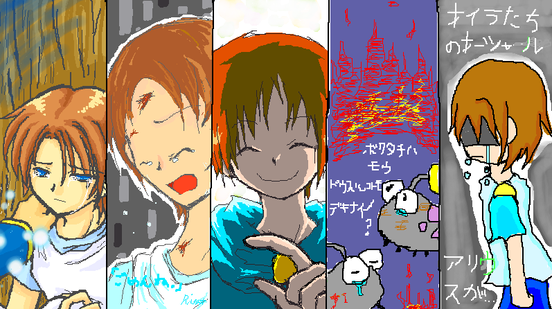
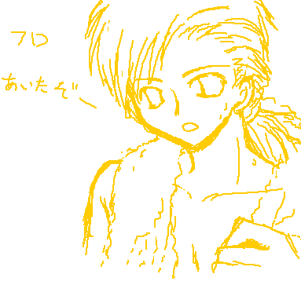
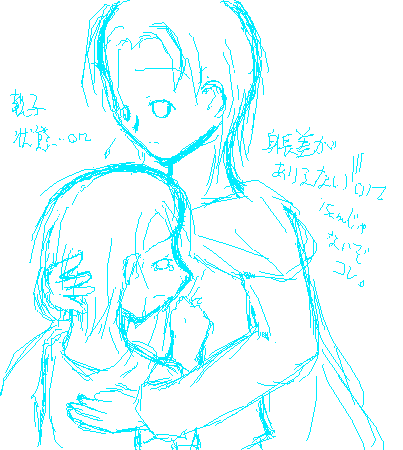
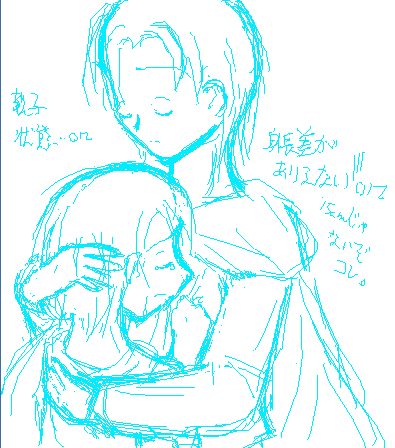

３月２９日の絵チャ、裏行きとなった合作ですｖＶ
一応スクロール。
涙やむしろ号泣や血表現が駄目な方はブラウザバック推奨。
後悔しない方はどうぞｖ

このままどうなろうと悔いは無い（ぇええ
はい、日付変更線越え後の合作ですよフッフー！（大 崩 壊
あっはっは！！クリスケがいっぱい！しかも全員泣いてる！！（テンション狂のため大爆笑/帰って来い
キノール自分の子じゃないみたいに素敵！プニ族抱きしめたい！！
…げふげふ。チャット中は上の文のテンションをはるかに上回ってました。あははは。
えと、左から透水時雨さんでクリスケレンタル擬人化＆カーレッジ（笑）。
クリスケ！！あんたそんなに美青年だったのか！！！（どごーん）
管理人が失神したのは言うまでもありません。はっはっは。
軽くホームシックになったクリスケをカーレッジが慰めてるそうですｖＶ
で、その隣は管理人クリスケ擬人化っていうかステージ２−５（２−４ですらなく）フライング。
…ノーコメで（逃亡。
そのお隣はかなぐさんでキノールレンタル擬人化ですｖ
笑顔が！逆光の表現が！！キノールそんな風に普段からもっと笑ってくれよ！（そんな
彼の指差す先に何があるのか気になりますーｖ
というか抱きしめられｔ（自分の子という事を忘れかけてる）
そしてそのお隣は蓬茶葉さんでプニ族ズ！（ズって）
勇者が助けてくれる前はこうなってたんじゃないかなー、…という事らしいです！
ごめん！ごめんねプニ族！あんな目にあわせて！！！（ステージ２−２と２−３参照…；
その涙拭ってあげたいです…。ほろほろ。
そして右端はピコピコさんでクリスケレンタル擬人化！
あはは…（遠い目）プロローグとかプロローグとステージ１の間とか、
多分クリスケこっそり泣いてただろーなー（笑/えねぇ）
まずい！ピコピコさんのイラスト見てたらすげぇ罪悪感がッ！（待て待て；）
で。
ここは裏の最奥ですからね、この先には落書きと言えど、
いやーんばかーん的な（ な ん だ そ の 壊 れ た 表 現）
イラストが置いてあります。
覚悟の出来た方はレッツ、スクロール。

管理人が透水時雨さんにリクエストしちゃった☆（…）勇者ノコノコフライング擬人化。
時雨さんは彼のことを知っているので、ぱぱっと描いてくださいました。
…って。
時雨さん反則ですよおおおおブーーーッ！！！（鼻血。
チャット時もぎゃーぎゃー大騒ぎしていた記憶がうっすらとあります㊥ｄ
あはは、もうどーなっても良いや☆（精神崩壊）
ちなみにこの時、衝撃が脳内許容量を越えてしまったので記憶がほとんど残ってません。あははは。
…て、転載許可いただけましたっけ（こんな事ばっかりだ）
降ろせという事でしたら即降ろしますー！；；
…さて。
まだあります。
一 番 ヤ バ イ の が 。
コトの発端は、
時雨さんが、私に「上の合作で私が（時雨さんが）描いた絵の続きを描いてください」とおっしゃったことです。
ええ、あの、時雨さんの描かれた素敵な（…）ホームシッククリスケ絵の続きですねえ。
最初は、普通に泣いてるクリスケをカーレッジがぽんぽん叩いて慰めてる絵にしようと思ったんですが、
全ては夜中のテンションが悪いのだ！！！
管理人「なんか物足りないので、
クリスケをカーレッジにすがりつかせて泣かせてもいいですか？」
一同「㊥ｄ」
…悪くないもん！あたし悪くないもん！！（誰だテメェ
はーいＢＬに免疫ある方（言ったよコイツ）スクロールどぞーｖＶ
時雨さんの絵のその後↓
（管理人妄想）

誰だお前らとか言っちゃいけない。
しかも、続いてこんな発言が飛びだしたのです。
誰が言ったかはナイショ☆（…）
某さん「カーレッジ！もっと、こう、腕をまわして！！」（ウロ覚え）
そ し て 管 理 人 は 暴 走 し た 。
…私悪くないもん！！！；（…。

ちなみにこの後、クリスケヒロイン疑惑（というかむしろ確定）説が浮上しました☆
とりあえず身長差を間違えましたが気になさらず。あははは。
後悔はしてませんｖ
（背後に迫る二人分の殺気）
悪ふざけをしてみる。
（マウスを）置け！置いていってしまえ！（メテオスのノリで。
…生 々 し い o r z
ま、いいや！！本編ではまあこういう事（多分/多分て）無いだろーし！
後悔は無いぜフッフー！（管理人の人間性が疑われている。）
はっきり言ってキャプチャ失敗したさ；；
お疲れ様でした、お粗末さまでした。
お開きは朝の４時半でした（笑）
ブラウザバックでお願いします。